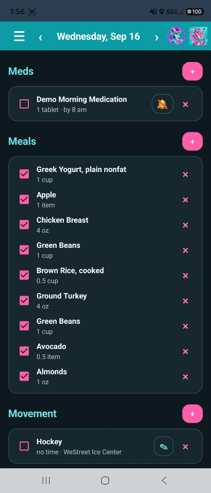
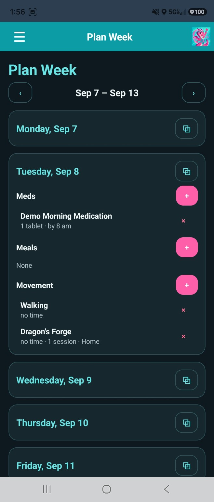
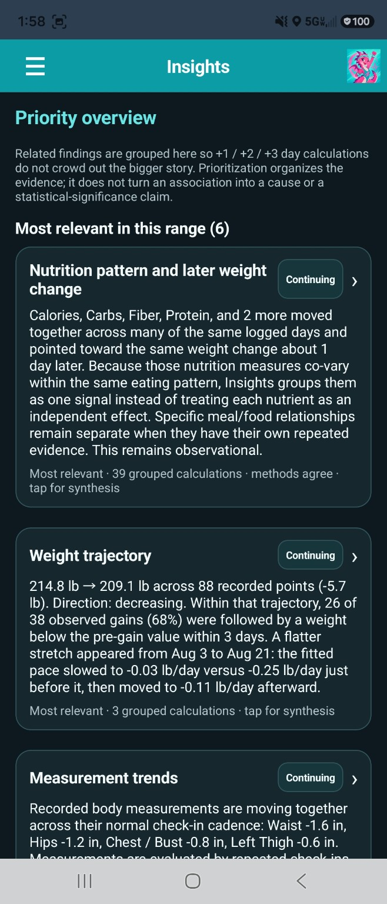
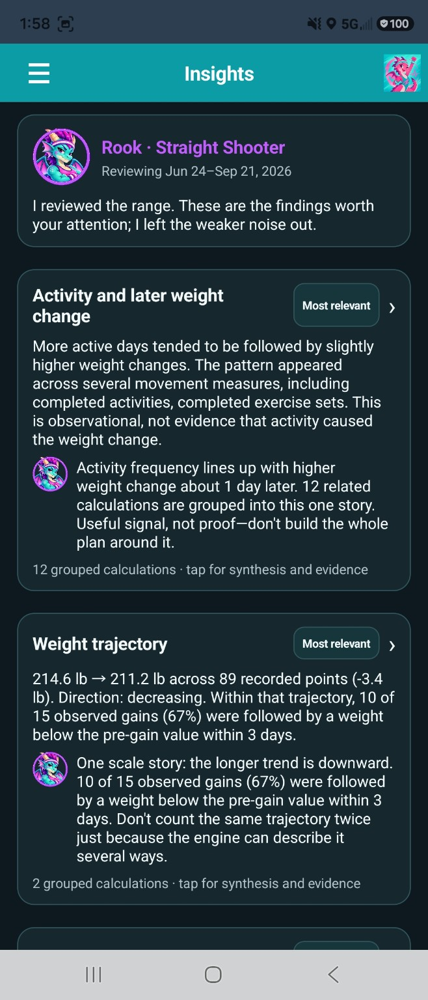
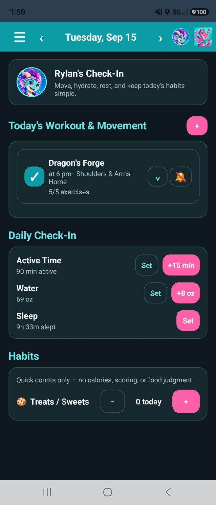
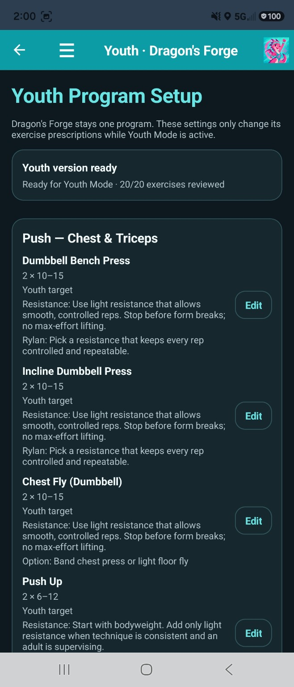
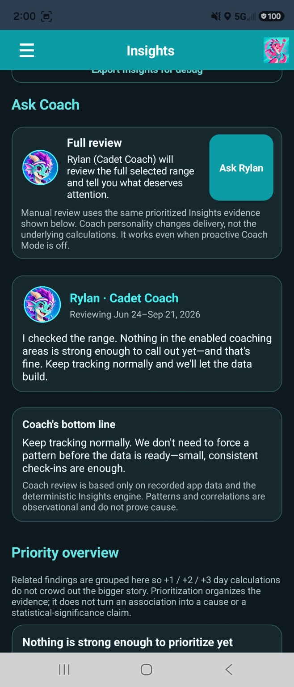
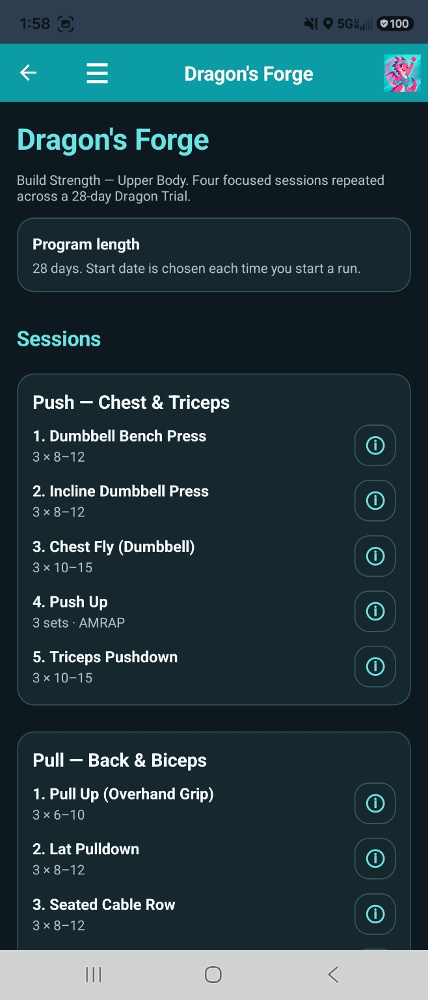
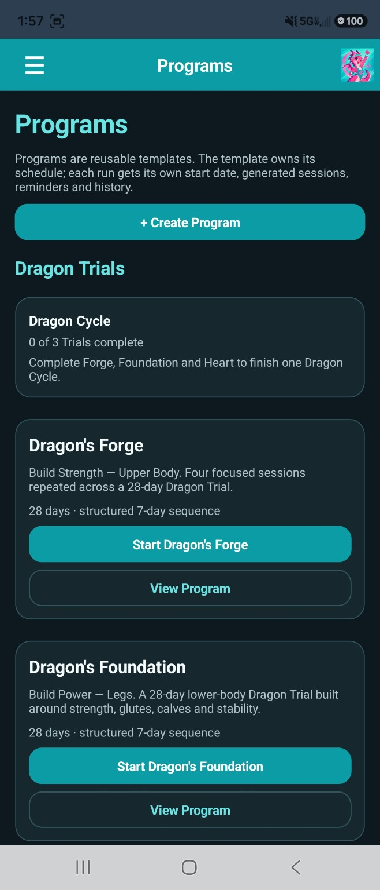

A typical tracker
Log → score → repeat
- Focuses on today in isolation
- Pushes one-size-fits-all targets
- Treats missed goals as failures
- Leaves the interpretation to you
DRAGON’S RHYTHM
Most tracking apps tell you what you logged. Dragon’s Rhythm is being built to help you understand what keeps happening together—across food, movement, sleep, hydration, medication, weight, measurements, routines, and time.

Across days—not just isolated entries.
Supportive, direct, or somewhere between.
THE IDEA
A day can look “good” or “bad” on paper and still tell you almost nothing. Dragon’s Rhythm is designed around the bigger question: what does your own history actually show?
A typical tracker
Dragon’s Rhythm
Dragon’s Rhythm surfaces associations and repeated patterns in recorded data. It does not treat correlation as proof of cause.
REAL LIFE FIRST
Plans matter, but real life wins. Dragon’s Rhythm keeps reusable meals, activities, medications, workouts, and weekly planning close at hand while still making it easy to add what really happened without rewriting the plan.

BUILT AROUND THE WHOLE PICTURE
Dragon’s Rhythm brings planning, tracking, training, coaching, and longer-term analysis into one connected system.
Look for repeated timing, trends, contrasts, and relationships across the data you already record.
Use the same underlying evidence with a coaching voice that fits you—from supportive to very direct.
Run multi-week training plans that can change sets, reps, difficulty, and instructions as the program progresses.
Keep instructions and muscle-reference views right where the workout happens instead of hunting through another app.
Keep measurements, photos, workouts, habits, and changes over time connected instead of reducing progress to one number.
Your day-to-day records are built around an on-device data model with backup and restore support.
DRAGON’S INSIGHTS
Dragon’s Insights is designed to look across your recorded history and surface the patterns that are easy to miss when you’re living one day at a time.

COACHING WITHOUT THE COOKIE CUTTER
Motivation is personal. Coach Mode is designed so the interpretation stays grounded in the same recorded evidence while the delivery can match the way you actually want to be spoken to.

YOUTH MODE
Youth Mode isn’t the adult experience with smaller numbers. It shifts the emphasis toward age-appropriate habits, movement, recovery, and a simpler daily experience.



TRAINING THAT CAN ACTUALLY PROGRESS
Dragon’s Rhythm keeps the structure with the program—not in a pile of weekly notes. Built-in Dragon Trials and custom progressive plans can carry their own schedule, generated sessions, reminders, history, and changing exercise prescriptions as the weeks move forward.


WHY I BUILT IT
Dragon’s Rhythm started as a personal app because the tools I had could record plenty of individual things, but they didn’t answer the questions I actually had about my own routines and progress.
So I started building the system I wanted: plan the week, record reality, keep the context, and then use that history to find the patterns worth investigating. The app has kept growing as those questions have grown.
CURRENT STATUS
There isn’t a public beta or release plan to announce yet. This page will grow with the app as development continues.